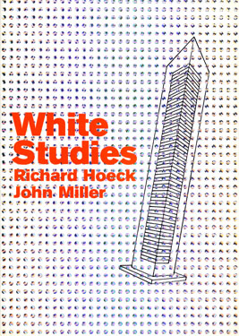
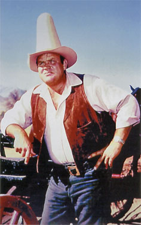
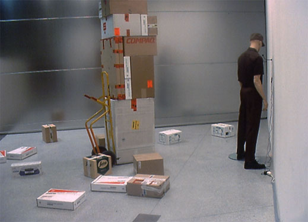
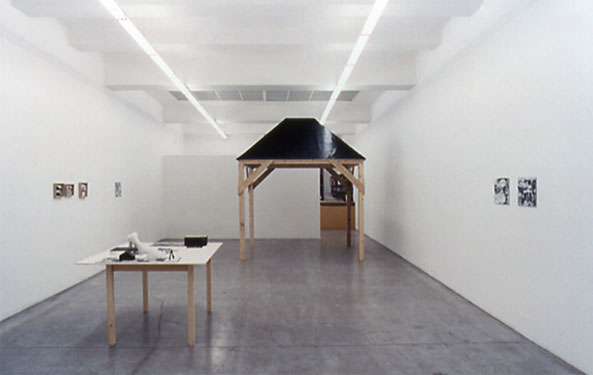
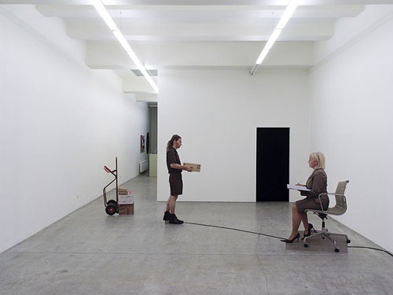
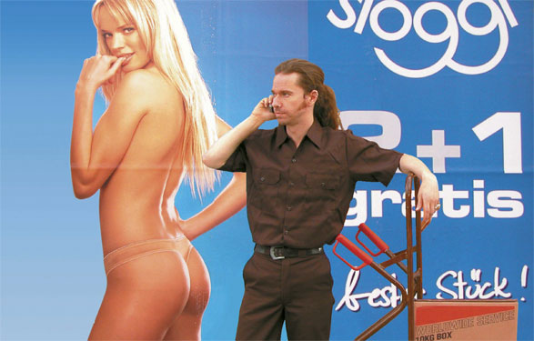
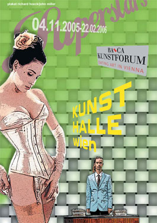
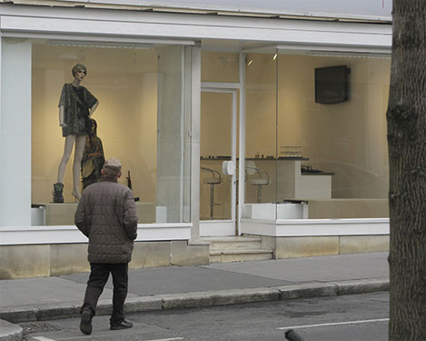

Low Noon
Galerie & Edition Artelier, 1998
Graz, Austria

White Studies
Kunsthalle Wien & Magasin 4, 1998
Innsbruck, Austria

No Place to Hang Your Hat
Kunstraum Johannes Widauer, 1999
Innsbruck, Austria

Deliveries in the Rear
Tiroler Sparkasse, 2001

A Country Lane
Engholm Engelhorn Galerie, 2002

They Like Them So Long as They're on a Stage
Transmittermusik Festival, 2003
Hohenems, Austria

Something for Everyone
Engholm Engelhorn Galerie, 2005

Plakat
Kunstraum Innsbruck, 2005
Innsbruck, Austria

Plakat
Kunsthalle Wien, 2005
Vienna

Camouflage on a Mannequin
Michael Hall Contemporary Art, 2008
Vienna

The Grotesque
Galerie Johann Widauer, 2010
Innsbruck